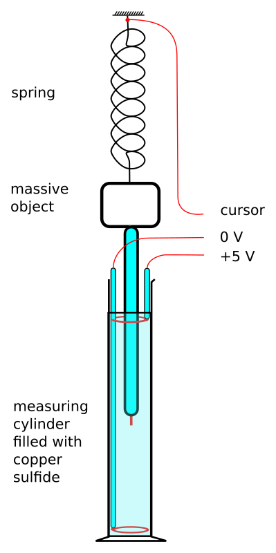
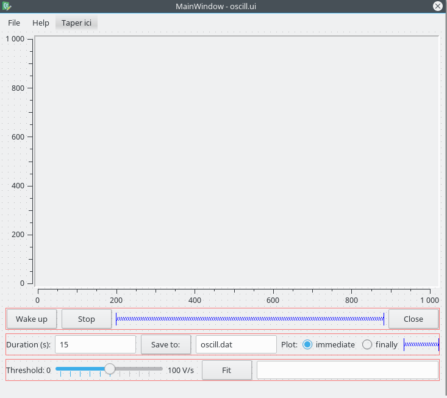

Oscill4.py, a demonstration program
Table of Contents
1 Purpose
The program oscill4.py aims to give an example of how to develop a user interface for
running an experiment with expEYES-Junior (see http://expeyes.in/).
Its source is part of a course named “Affordable Science Experiments”; see:
2 The experiment
2.1 Schematics
A massive object is hung under a spring. The top of the spring is tightly fixed, and a vertical insulated wire is hung just below the massive object. The end of this wire is unwrapped, so it acts as the cursor of a potentiometer. Eventually, some light sheet of plastic or of metal is tightened to the massive object in order to provide some friction while it moves in the air.
The potentiometer’s body is a measuring cylinder filled with copper sulfide (\(concentration = 0.01\, mol\cdot L^{-1}\)), which bears two circular electrodes, made with one turn of copper: one at the bottom of the cylinder, the other one near the top of the copper sulfide solution. Both electrodes are connected through insulated wires to a \(4.5\, V\) battery. Whenever one connects the battery, she should consider which electrode need to gain more copper, and connect the negative end of the battery to this electrode (copper deposits on the cathode).
When some current flows between both electrodes, there are quite plane equipotential surfaces, regularly spaced vertically between the electrodes. So when the height of the vertical wire’s tip movesup and down, its potential is a linear function of its height. Figure 1 describes the experiment.

Figure 1: An oscillator made with a spring, and its liquid potentiometer
2.2 Let us do it
The experiment is set up, and two wires are plugged into expEYES’ slots: the liquid cursor is connected to A1, the first bipolar analogic input, and the minus wire is connected to GND, ground of the computer.
We must take care to limit the voltage applied to the cylinder, in order to prevent voltages higher than 5 V.
Then, we launch the application oscill4.py (command line = python3 oscill4.py),
and we click on the Wake up button. We slowly pull the pendulum far from its
equilibrium position, and we release it suddenly. Data sampling should begin
precisely at this moment, and we should see the curve plotted while the pendulum
keeps oscillating.
If data sampling starts too quickly, we can lower the sensibility to start signal by dragging the Threshold slider to the right.
When the curve is completely plotted, we can save the data (Save button) or fit them against a mathematical model (Fit button).
3 The user interface

Figure 2: the user interface of the program oscill4.py
The figure 2 displays the user interface as it appears inside
the authoring program (designer). We shall discuss the methods attached to all
user-level action widgets.
3.1 Menus and submenus
3.1.1 File → Quit
To close the main window.
3.1.2 File → Save
To save current data to a text file, whose name can be changed below, ubder the plot area.
3.1.3 Help → Manual
To read the present help file.
3.1.4 Help → About
To read license stuff.
3.1.5 Button “Wake Up”
Prepares the program for a new experiment. The data acquisition will begin as the input signal’s slew rate becomes greater that a given threshold, which can be set with the “Threshold” slider described below.
3.1.6 Button “Stop”
This button can be used in the immediate mode described below. It stops data gathering, so the program can be activated for a new experiment after.
3.1.7 Text input “Duration”
You can type a number of seconds, which will be the scheduled duration of the next experiment; plots are resized while one is modifying the duration.
3.1.8 Button “Save”
To save current data to a text file, whose name can be modified just near the button. The data are written as lines containing a timestamp and a voltage value, units are second and volt. Numbers areseparated by plain spaces.
3.1.9 Radio buttons: “immediate” and “finally”
When the button “immediate” is checked, the plot will be updated as fast as data are coming from the experiment, in near-real time. When the button “finally” is checked, data are first measured and finally their curve is plotted.
The immediate mode is enforced if the experiment’s duration is greater than 3.5 s; the finally mode is enforced if the experiment’s duration is shorter than 0.5 s.
3.1.10 Slider “Threshold”
This slider provides an opportunity to tune the sensitivity of the detection for the start of experiment. When the Wake up button has been clicked, the experiment’s data will be gathered as soon as they begin to change quick enough. If one selects a high slew rate, the start detection is less sensitive; on the contrary, if the selected slew rate is zero, the start detection is quite inactive, and measurements begin right after the click on the Wake up button.
3.1.11 Button “Fit”
To compare measurements with a mathematic model for a damped sine wave. Here is the formula used to fit data: \[A*\sin(2\pi ft+\phi)*e^{-D*t}+C\] where \(A\) is the amplitude (V), \(f\) is the frequency (Hz), \(\phi\) is a phase, \(D\) is the damping factor (\(s^{-1}\)), and \(C\) is an additive constant value, the DC component of the signal.
Some authors prefer consider \(\tau = \frac{1}{D}\) with unit \(s\), which is the “relaxation time” of the decay. The amplitude of the signal is divided by two when \(t\simeq0.69\tau\).
When the button is clicked, parameters are optimized to make a model as near as possible from the measured data; the formula is displaid near the Fit button, and curves coming from the model are plotted in addition to the data’s plot.